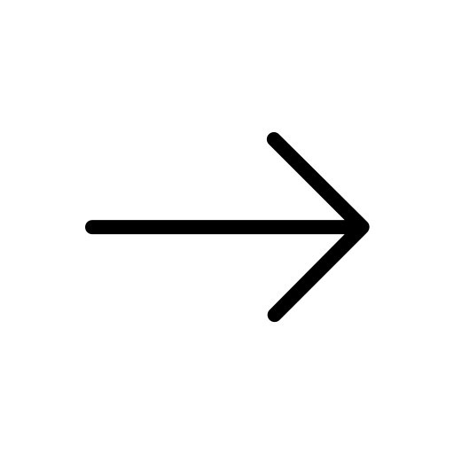
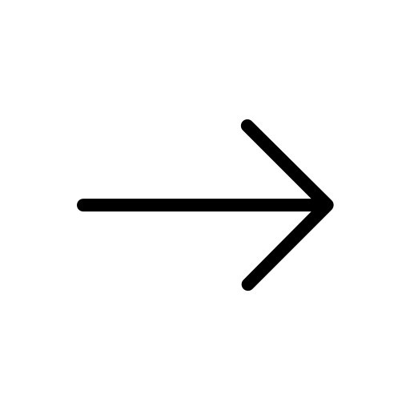

{kind=link}
 

It looks like a lot at first, but I promise it's not. Most cameras will vary from this layout, but likely not in alien ways. The first thing I'd like to point out is the grip on the camera. Cameras are ergonomic, so if you intend to go out for a long shoot or take it with you on your walk through the park, your hands aren't going to ache and cramp after all is done.
Next is the main dial, which will allow you to easily adjust certain configurations as you're shooting photos. The mode dial is an important one, as it lets you swap between shooting modes like automatic, action, portrait, etc. These are pre-arranged settings that will help you shoot in those conditions, and will help you immensely as you learn to use your camera.
The flash button toggles using the flash in an exposure. The lens mount and release are what you'll interact with in order to change out your lenses - it's real quick and easy to swap these!.
The mirror is a fascinating topic which we'll explore on the next page!